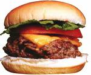

Hamburger Sturm ein Flop!?
Schade, der Hamburger Sturm am Sonntag in Kaiserslautern war wohl leider ein Flop. Die Aktions Homepage ist so gut wie down und enthält weder Berichte noch Fotos & Videos. Nur ein Gästebucheintrag berichtete kurzzeitig vom Flop.
Lag es an dem ungünstigen Termin? – Pfingstsonntag – wer ist da in KL? 🙂
Lag es an der abgedroschenen Idee? – Selbst PRO7 hatte schon darüber berichtet
– oder doch mal wieder an Kaiserslautern? Raus mit Euch!
Wer weiss mehr? Ich will Berichte, Fotos und Co!

Comment by Christoph
Tuesday, 29. May @ 14:13 118044802902Tue, 29 May 2007 14:13:49 +0100
Also jetzt mal ehrlich: Flashmobs finde ich prinzipiell echt eine lustige Sache, auch wenn sie oftmals richtig Sinnfrei sind. Aber dieser ist leider nichteinmal Sinnfrei, man könnte ihm fast nachsagen er wäre eine gezielte Werbeaktion von MD und dafür lasse ich mich nur ungern einspannen…
Comment by Matze
Tuesday, 29. May @ 19:15 118046610107Tue, 29 May 2007 19:15:01 +0100
36(?) Leute, 116(?) Burger, MCDonals hatte ca. 7 Bedienungen + Filialleiterin am Start und war garnicht überfordert. Aber ein grinsen wars wert. Fotos stell ich.. später, morgen, .. online.
Ich glaube witzig isses dann, wenn der Mäggges nix von weiß, aber das wird schwierig sein. In Berlin hat das wohl mal geklappt
Comment by Tobi
Wednesday, 30. May @ 11:51 118052587011Wed, 30 May 2007 11:51:10 +0100
Wie MC wusste davon? Das ist ja noch blöder… 😉
Comment by kiffstock
Thursday, 31. May @ 19:36 118064018707Thu, 31 May 2007 19:36:27 +0100
was fürne völlig beknackte scheisse.
Comment by leobard
Friday, 1. Jun @ 20:28 118072971008Fri, 01 Jun 2007 20:28:30 +0100
36 Leute und 116 Burger ist für Kaiserslautern kein Flop. Gerechnet mit der Gesamtbevölkerung ist das sogar recht gut. Viel mehr Leute wirst du in Lautern nicht motivieren können für solche Aktionen. Wir hatten beim Permanent Breakfast 2006 etwa 40 Leute, das ist aber noch sinnfreier (unpolitisch korrekter), ich denke das ist die Obergrenze.
Ich etwa hab nicht mitgemacht, weil ich keinen Hunger hatte, die MC Aktion zu Sinnfrei finde, und man ja doch im Endeffekt MC sponsert. Im Endeffekt könnte der Burgersturm ja auch eine Verdeckte Marketingaktion sein, Konzerne setzen mittlerweile StreetArt als Marketing ein. Das war in KL nicht der Fall, aber ich verstehe die Dynamiken nicht komplett, darum abstinenz.
Comment by Dollar
Monday, 4. Jun @ 15:47 118097202303Mon, 04 Jun 2007 15:47:03 +0100
So ich muss gestehen ich war dabei ich schäme mich ja schon aber ich han gedacht des wird was da waren ca 20 leute und einer von rpr sogar die polizei ist wieder gegangen (nach 10 min^^) aber egal am ende waren es 161 burger fehlten ja nur noch ca 3500 burger oder so
Noch mal nicht mehr in kl auser es kommen entlich mal en paar
in dem sinne ciao
Comment by Dollar
Monday, 4. Jun @ 15:49 118097216603Mon, 04 Jun 2007 15:49:26 +0100
ich war dabei und ich bin(nicht)stolz drauf ich hab zwar nur geklozt aber war voll fürn a***** ^^
egal 161 burger 27 leute und 16 die kommen wollten han de weg nicht gefunden oder warn besoffen ich weis nicht mehr des war der neue rekort in sachen peinlichkein
Comment by gnuelf
Monday, 11. Jun @ 11:06 118155997011Mon, 11 Jun 2007 11:06:10 +0100
wie läuft sowas ab? macht da einer ne bestelliste und sammelt das geld ein?
ich versteh auch nicht ganz den sinn .. da soll sich mal keiner über das permanent breakfast beschweren…
ich mein klar ist mal was lustiges wenn man nix besseres zu tun hat … hui cool wir überrennen das mac und schaun uns die doofen gesichter des mitarbeiter an … wenn ja aber genau die mittlerweile schon drauf vorbereitet sind .. wo ist dann der reiz an der sache? selbst wenn 500 leute in kl gewesen wären (was aber rein statistisch nicht anzunehmen war) hätten die mcdoof mitarbeiter halt ein bisschen höher mit der schulter gezuckt und über ihr leben resümiert in welchem sie die nächsten stunden burger backen.
ich will das hier nicht schlechtmachen .. ich bin selbst fan von massenveranstaltungen und damit verbundenem party machen .. aber genau wie LEOBARD schon sagte .. man sollte sich mal über die “Dynamik” gedanken machen sonst ist man genau so ein Sheeple wie alle anderen.